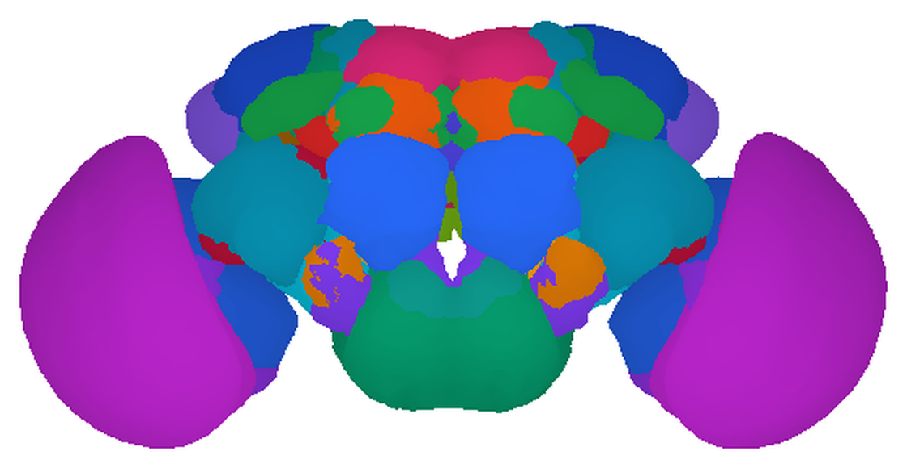
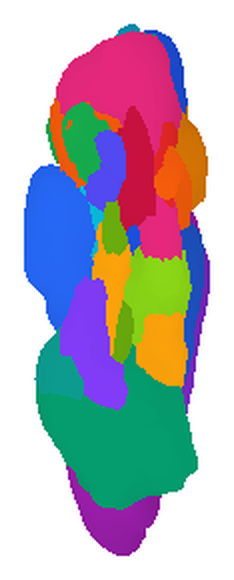
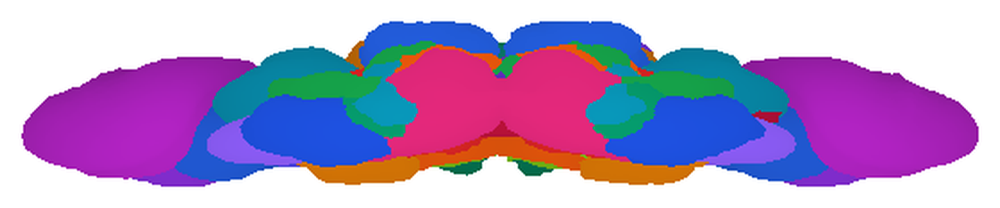
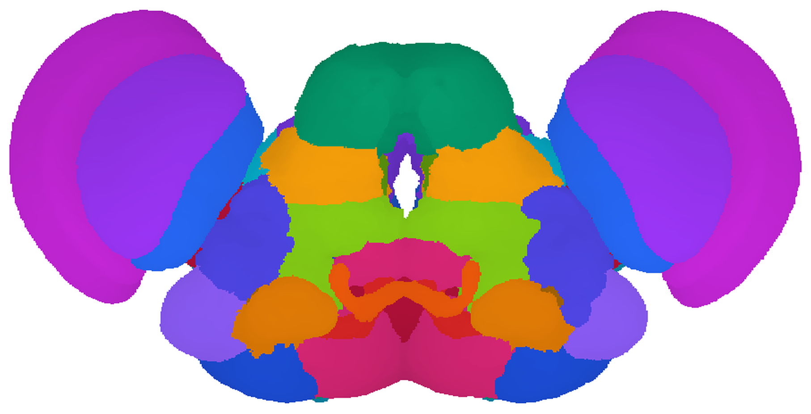
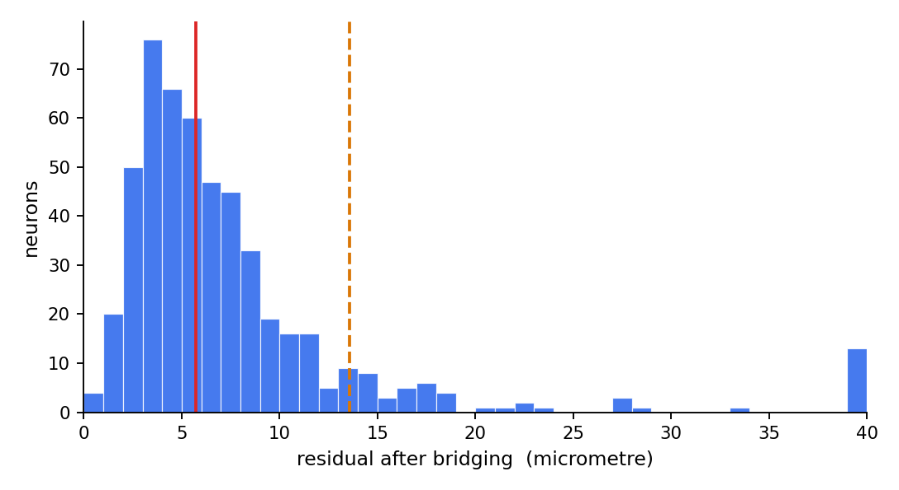

1你在 VFB 上看到的那顆腦，是哪一隻果蠅的？
不是任何一隻。Virtual Fly Brain 預設顯示的那顆成蟲腦叫 JRC2018Unisex，它是六十二隻果蠅的腦平均出來的（把每一顆再左右翻一次，一共 124 張影像）——世界上沒有一隻果蠅長成那個樣子。
這件事不是冷知識，它是整個網站能運作的原因。VFB 自己的說明是這樣寫的：
Registering to a single individual’s brain bakes that individual’s idiosyncrasies into every result. Modern templates are therefore averages, built by groupwise registration of many samples so that no one animal dominates.
出自 VFB 說明文件〈Registration〉，
virtualflybrain.org/docs/concepts/registration/，2026-09-13 讀取。
白話說：如果拿某一隻果蠅的腦當基準，那隻果蠅碰巧比較胖、比較歪、切片時被壓到的地方，就會變成後面每一個人的測量誤差。所以大家改成用「平均腦」。
2template 是兩件事
「template」這個字在 VFB 上同時指兩樣東西，分開講比較不會亂：
一、對位的基準
一顆標準腦的三維影像。每一張要放進 VFB 的影像，都會先被變形、對到這顆標準腦上，之後大家就共用同一組座標。
二、畫上去的分區地圖
有人在這顆標準腦上把腦區一塊一塊塗好顏色，於是「這個位置屬於哪個腦區」有了現成答案。VFB 把這些塗好的區塊叫 painted domain（畫上去的區域）。
VFB 的原話把兩件事寫在同一句裡：
Canonical templates not only allow for spatial alignment of image data but also are often painted to make a reference atlas of anatomical regions.
出自 VFB 說明文件〈Templates〉，
virtualflybrain.org/docs/concepts/templates/，2026-09-13 讀取。
下面三張圖是同一份分區地圖的三個角度。用的不是 VFB 的 template，而是另一套叫 FCWB 的標準腦——這是 FlyCircuit 那批果蠅神經元當年用的基準，它的檔案可以免費下載，所以我們能自己把圖畫出來，而不必去抓網站上的截圖。FCWB 不在 VFB 的 template 清單裡，這件事本身很重要，第 6 節會回來講。
先講方位用語，三張圖都會用到。果蠅趴著的時候，背側是腦的上面、腹側是下面；前側是靠近觸角與口器那一端，後側是另一端；中線是把腦分成左右兩半的那條分界。這幾個詞講的是果蠅身上的方向，跟圖擺在畫面上的哪一邊是兩回事——後者由「站在哪裡看」決定。
三維影像裡的一個小方格，相當於平面照片的一個像素。這三張圖的體素邊長是 1 微米。
腦裡由神經纖維與突觸（神經元之間傳遞訊號的接點）密集堆成、看得出邊界的區塊。果蠅腦的「腦區」講的幾乎都是這種東西，細胞本體聚集的外層不算。



三張圖由 scripts/make_part1_figures.py 算出，共用同一份標籤體積。這份地圖一共 75 個標籤：34 個腦區左右各一，加上 7 個橫跨中線（腦左右對稱的那條分界）、不分左右的區，34×2＋7＝75。顏色只是為了讓相鄰的區塊分得開，不代表任何分類，所以不放圖例。模板 FCWB（Ostrovsky & Jefferis 2014，CC0）；分區 FCWBNP（natverse，GPL-3；分區出自 Ito et al. 2014, Neuron 81:755–765）。
3VFB 有十套 template，不是一套
多數人用 VFB 只會遇到 JRC2018Unisex，於是以為「標準腦」就是那一顆。實際上站上登記在案、可以拿來對位的 template 有十套：
| 編號 | 名稱 | 涵蓋什麼 | 畫了幾個分區 | 授權 |
|---|---|---|---|---|
| VFB_00101567 | JRC2018Unisex | 成蟲腦（現行標準） | 46 | CC-BY-NC-SA 4.0 |
| VFB_00200000 | JRC2018UnisexVNC | 成蟲腹神經索 | 21 | CC-BY-NC-SA 4.0 |
| VFB_00017894 | JFRC2 | 成蟲腦（較早的標準） | 58 | CC-BY-NC-SA 4.0 |
| VFB_00030786 | Ito2014 | 成蟲腦（腦區命名法的官方模板） | 75 | CC-BY 4.0 |
| VFB_00101384 | JRCFIB2018Fum | 成蟲腦（hemibrain 電顯資料自己的空間） | 97 | CC-BY 4.0 |
| VFB_00049000 | Wood2018 | 三齡幼蟲中樞神經系統 | 255 | CC-BY 4.0 |
| VFB_00050000 | Seymour（L1 ssTEM） | 一齡幼蟲中樞神經系統 | 0 | CC-BY 4.0 |
| VFB_00100000 | Court2018 | 成蟲腹神經系統 | 22 | CC-BY 4.0 |
| VFB_00110000 | McKellar2020 | 成蟲頭部 | 18 | CC-BY 4.0 |
| VFB_00120000 | Kuan2020 | 成蟲前足 | 4 | CC-BY 4.0 |
2026-09-13 由 scripts/vfb_probe.py 抓取，原始輸出在 out/templates.json 與 out/template_detail.json。分區數用兩種算法各算一次——一種是數分區清單（扣掉代表整顆腦自己的那一格），一種是直接跑站上的 Painted domains 查詢——十套的兩個數字都一致。授權取自 VFB 的知識庫，每一套 template 各對到唯一一個授權。
但這張表回答的是「VFB 記了什麼」，不是「你可以做什麼」。VFB 兩邊都只是轉錄：授權是當年釋出那套 template 的人給的，VFB 把它抄進自己的資料庫，抄錯或沒跟上更新都有可能。所以要判斷自己能不能用，源頭一律是那套 template 的原始論文或資料頁。這張表的用途是索引——告訴你該去查哪一套、大概會查到什麼——不是依據。
要挑一套來用的話：成蟲腦就挑 JRC2018Unisex。它是 VFB 現在的預設，新進來的資料都往它對；本課往後凡是沒有特別說明的成蟲腦，指的都是它。
為什麼要十套？因為問題不同，基準就不同。研究腹神經索的人對不到腦的 template 上；研究幼蟲的人對不到成蟲的；而 hemibrain 那批電顯資料在自己的空間裡重建，它有自己的一套座標。十套裡有三套根本不是腦——腹神經索、頭部、前足各一套。
VFBc_ 開頭的項目也標著 template，那是每一套 template 的附屬影像，搜尋時不會被當成可以選的基準。兩個數字都對，只是回答的問題不同；需要提到那十個的時候，本課會寫明它們是附屬影像。
授權那一欄值得看一眼，因為它分成乾淨的兩群：JRC2018 那一家（成蟲腦、腹神經索）與 JFRC2 帶 NC，也就是禁止商業使用；其餘七套都是 CC-BY 4.0，註明出處就可以用。本課是非營利教學，用哪一套都沒問題；你如果打算把圖放進要收費的東西裡，就照上面那個方框說的，回頭查那套 template 的原始出處，不要停在這一欄。
4registration 實際上在做什麼
registration（對位）是把你那張影像「變形」到 template 上的那一步。VFB 的定義是：
Registration is the step that fixes this: computing a spatial transformation that maps each sample onto a common template.
出自〈Registration〉，2026-09-13 讀取。
它不是一步做完的，而是三個階段，一個比一個自由：
這裡有一件學員多半沒想過的事：對位不是照著你想看的東西對的。
Registration is driven by a reference channel rather than by the signal you care about. In fly work that is usually a neuropil counterstain — anti-Bruchpilot (nc82) is the standard — which looks broadly the same in every animal and therefore gives the algorithm something stable to match. The transformation computed from that channel is then applied to the signal channel.
出自〈Registration〉，2026-09-13 讀取。
白話說：你拍的那張影像通常有兩個頻道。一個是你要的訊號（你標記的那顆神經元），另一個是參考頻道——整顆腦的背景染色。果蠅這一行慣用的染色叫 nc82，它認的是突觸裡一個叫 Bruchpilot 的蛋白，所以染出來的正好是所有神經氈的輪廓——而且每一隻果蠅的這個輪廓都長得差不多，程式才有一個穩定的東西可以對。電腦是拿這個背景去跟標準腦比對，算出一個變形；算好之後，那個變形才被套到你要的那個訊號上——你那顆神經元是跟著一起被移到新的位置的。
這代表：背景染得好不好，決定了你的神經元被放到哪裡，而這跟你的神經元本身染得好不好沒有關係。VFB 自己對進來的影像用的是 CMTK 這套軟體，先做九個自由度的對位（也就是三個方向的旋轉、平移、縮放各一組，共九個可調的數），再做非剛體。
5對位出來的位置是估計值，不是量測值
這一節只有三句話，但它們是整個 VFB 最容易被誤用的三句。三句都是 VFB 自己寫的。
A registered neuron is an estimate. Its position in template space is where the warp put it, not where it was in its own brain. Fine structures — thin neurites, small boutons — move most.
第一句：那顆神經元的位置是算出來的，不是量到的。你在畫面上看到它穿過某個腦區，意思是「變形程式把它放在那裡」。愈細的構造被搬動得愈多——細的神經突（神經元伸出去的細長分支）、小的膨大處（纖維上突觸聚集而鼓起來的小球），正是誤差最大的地方。
Accuracy is not uniform. Registration is generally better in large, well-stained neuropils than at the brain surface, in the optic lobes, or anywhere the sample was torn or compressed during dissection.
第二句：準確度在腦裡各處不一樣。大塊、染得清楚的神經氈最準；腦的表面、視葉、以及解剖時被撕到或壓到的地方最不準。所以「誤差大約多少微米」這種話，沒有指定位置就沒有意義。
Overlap is not contact. Two registered objects occupying the same template voxels are near each other in a common space. That is a hypothesis about connectivity, not evidence of a synapse; for that you need EM (connectivity data).
第三句，也是最重要的一句：重疊不等於接觸。兩顆神經元在畫面上佔到同一批體素，只表示它們在這個共同空間裡靠得很近。那是一個關於連線的假設，不是突觸的證據。一個 1 微米的體素，跟一個突觸的尺度差了將近一百倍——在同一個體素裡，可以是貼著，也可以是隔著好幾層別的東西擦身而過。
這三句合起來，決定了你在 VFB 上看到一張漂亮的疊圖之後，可以說什麼：
| 看到的現象 | 可以說 | 不可以說 |
|---|---|---|
| 兩顆神經元在畫面上交錯 | 它們在同一個腦區裡有共同的分布範圍，值得進一步查連線資料 | 它們接觸／它們之間有突觸 |
| 一顆神經元的末梢落在某個腦區邊界外一點點 | 在這個對位的誤差範圍內，它可能屬於也可能不屬於這個區 | 它不屬於這個區 |
| 兩顆來自不同資料集的神經元長得幾乎一樣 | 形態相近，而且是在同一個 template 空間裡比的 | 它們是同一型（這要等 PART 5 的判準） |
6跨 template：bridging，以及我們自己做過一次
第 3 節說 VFB 有十套 template。那麼問題來了：掛在不同 template 上的資料，怎麼放在一起看？
答案叫 bridging registration（橋接對位）——兩套 template 之間的轉換。VFB 說得很直接：
Data on VFB arrives registered to whichever standard its producers used — JRC2018 unisex, JRC2018F or M, JFRC2, or a connectome’s own space such as the hemibrain, FAFB or MANC — and the only way to put a FlyWire neuron next to a split-GAL4 expression pattern is to bridge between them.
出自 VFB 說明文件〈Bridging Registrations〉，
virtualflybrain.org/docs/concepts/bridging/，2026-09-13 讀取。
這件事在 VFB 上看不見，因為它已經做完了。但痕跡找得到：FlyCircuit 那批單神經元一共 16,127 顆，在 VFB 上每一顆都有兩個版本，一個在 JFRC2 空間、一個在 JRC2018Unisex 空間。後者就是橋接的產物。
16,127 這個數字由 scripts/vfb_probe.py 從 VFB 的知識庫算出（2026-09-13），原始輸出在 out/flycircuit_images.json。兩個 template 版本的比例，是在該查詢翻得到的前五萬列裡各佔一半。
每一跳都是近似
Each bridge is an approximation, and a four-hop route applies four of them in series. … A comparison made within one space is stronger evidence than one made across a long path — and since the route is computed rather than declared, it is worth looking at how long it is before trusting a fine-grained result.
出自〈Bridging Registrations〉，2026-09-13 讀取。
「四跳」是什麼意思：兩套 template 之間不一定有直接的轉換，常常要經過中間的空間轉手。每轉一次，誤差就疊一次。所以同一個空間裡做的比較，比跨空間的比較可信。而且路線是程式自己挑的、不是寫死的，所以 VFB 特別提醒：在相信一個很細緻的結果之前，先去看看它走了幾跳。
跨座標系第一個會踩的坑：軸的方向
在講誤差之前，先看一個更基本的問題。下面兩張圖是同一份分區地圖，只是存在兩個不同的座標系裡；兩張用完全一樣的繪圖設定畫出來：


兩張圖由 scripts/make_part1_figures.py 產生，分區資料完全相同，只差在存檔時用的座標系。兩張不能拿來比大小：同一顆腦在 FCWB 裡左右寬 536 微米、在 FC12_warp 裡寬 886 微米（差 1.65 倍），而網頁把兩張縮到同寬了。這個倍率跟後面解出來的轉換是對得上的——那個轉換的三軸縮放是 0.626、0.605、0.406，第一項的倒數正好約 1.6。
差別在哪裡？把兩個檔案的軸量一遍就知道：兩邊的第一個軸都是左右、而且方向一致，但第二個軸（背腹）與第三個軸（前後）方向相反。
我們自己橋接過一次，所以講得出誤差有多大
FCWB 這套標準腦不在 VFB 的十套裡。我們手上另有一批 FlyCircuit 神經元存在第三個座標系（本課叫它 FC12_warp），要跟 FCWB 的分區地圖一起用，就得自己做一次橋接。做法是：找 515 顆兩邊都有的神經元，每顆取一個質心（整顆神經元所有點的平均位置，可以想成它的重心），用這 515 組對應解出一個仿射轉換——也就是第 4 節那三個階段裡的第二階段，只准旋轉、平移、縮放、斜切，不做局部變形。
解出來之後，把每一顆的質心轉過去，量它跟真正位置差多少——這個差距叫殘差：

scripts/make_part1_figures.py 算出，轉換取自本專案 D03 的 D03_fc_to_fcwb_affine.json。這 515 顆裡有 80% 被拿去解那十二個參數、20%（103 顆）留著不用。留著不用的那組中位數是 4.73 微米——比被擬合過的那組（5.89 微米）還低一點，表示這個轉換沒有把自己過度貼合到手上這批資料。
還有一個順手的自我檢查：解出來的平移量第一項是 282.6 微米，而 FCWB 這顆腦的中線位置獨立量出來是 282.3 微米。兩個數字是分別得到的，對得上就表示這個轉換至少沒有整體歪掉。
最後把三個空間並排，這一節的重點就清楚了：
| 空間 | 誰在用 | 在 VFB 上？ |
|---|---|---|
| JRC2018Unisex | VFB 現在的預設；FlyWire、male CNS 等新資料 | 是（現行標準） |
| JFRC2 | 較早的資料，包括 VFB 上的 FlyCircuit | 是 |
| FCWB | FlyCircuit 原本的參考腦 ← 本頁三張分區地圖用的是這一套 | 否 |
| FC12_warp | 本課手上那批 FlyCircuit 體積資料 | 否 |
同一批 FlyCircuit 神經元，散在四個座標系裡。這不是特例，這是常態——你自己的資料多半也不在 VFB 的任何一個空間裡。知道這件事，以及知道橋接要付出多少誤差，是用 VFB 之前該先有的準備。
7動手做
這一份不用安裝任何東西，也不用登入。每一步都直接給網址，貼到瀏覽器就會開在 VFB 的檢視器裡。
- 打開 JRC2018Unisex 的頁面。網址：virtualflybrain.org/reports/VFB_00101567。這種
reports/編號的網址是 VFB 自己的查詢結果在連的那一種，它會轉到檢視器。
去哪裡確認你到對地方了：檢視器裡有一個 Term Info（資訊面板）分頁，它顯示的是你目前選中的那個東西。看它的Name那一欄，應該寫著JRC2018Unisex (VFB_00101567)；瀏覽器網址列也會帶著同一個編號。兩邊對上了再往下做。
順便記一件事：這一套還有一個比較短的名字JRC2018U。它不出現在 Name 欄，但下一步要找的那個查詢就是用它命名的——同一個東西在同一個面板上有兩個名字，這在 VFB 很常見。 - 看它的分區。去哪裡找：同一個 Term Info 面板往下捲，有一區叫
Queries（跟這個東西有關的現成查詢）。在那裡找到名為 Painted domains for JRC2018U 的查詢並執行它。回傳的每一列都是畫在這顆標準腦上的一個腦區，一共 46 列——跟第 3 節那張表對得上。 - 換一套 template，同樣做一次。reports/VFB_00017894 是 JFRC2。一樣在 Term Info 的
Queries區，這次的查詢叫 Painted domains for JFRC2，回 58 列，跟上一套的 46 不一樣——不同的 template 畫的分區本來就不同，這正是第 3 節那張表那一欄的意思。 - 看一顆神經元掛在哪幾套 template 上。打開 FlyCircuit 的一顆神經元 Cha-F-100205（reports/VFB_00005010）。
去哪裡看：Term Info 裡有一欄叫Aligned to（v3 介面寫成Aligned To），列的就是這顆神經元對位到哪幾套 template。這一顆會列出兩套：VFB_00017894（JFRC2）與VFB_00101567（JRC2018Unisex）。
第二套就是第 6 節說的橋接產物——這顆神經元只拍過一次，另一套是算出來的。順帶一提，這一欄列的是編號；編號要對回名字，就是第 3 節那張表的用途。 - （選做）現在去試搜尋框，而且先知道會發生什麼。要先分清楚有兩個不同的搜尋框：
virtualflybrain.org那個寫著「Search VFB — pages, neurons, brain regions…」的框，是說明網站自己的；第 1 步打開的檢視器在另一個網站上（v2.virtualflybrain.org），那裡的搜尋是另一個。
在說明網站那個框裡打JRC2018Unisex，大小寫要跟這裡一模一樣。打對了，它排第一。只要把那個 U 打成小寫 u，它就掉出畫面——那個框只跟資料庫要前 40 筆、而且只顯示 8 筆，改了大小寫之後它連前 40 名都排不進去，於是畫面上剩下的 8 筆全是「某某 on JRC2018Unisex adult brain」。看不到它不是你打錯字，是那個框就是這樣設計的。
順便看一眼那 8 筆：它們沒有一個是 template，全是畫在它上面的東西。另外還會混進 JRC2018UnisexVNC（VFB_00200000）——那是腹神經索那一套，名字只差三個字母。
JRC2018Unisex 讓目標排第 1，JRC2018unisex 讓它掉到 40 名以外——同一個東西、同一個資料庫，只差一個字母的大小寫。
所以與其教你在那個框裡怎麼找，不如給網址。這也是第 5 節那條「筆數不是個數」的同一個毛病換了個地方出現：你看到的數字往往是介面的產物，不是資料的產物——想知道資料本身有幾個，得繞過介面直接問資料庫，那是 PART 6 的事。
Licenses 欄——它除了授權，也標出這筆影像出自哪一個資料集，資料集的名字裡帶著版本（例如上面那顆神經元標的是「FlyCircuit 1.0 - single neurons (Chiang2010)」）。會變的是數目，不會變的是這一頁講的那些關係：template 是平均腦、對位是照參考頻道做的、位置是估計值、重疊不是接觸、每一次橋接都要付誤差。